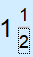

En regardant l'en-tête de Fragile, vous verrez 7 menus déroulants différents parmi lesquels choisir. Le premier d'entre eux est le menu déroulant Fichier. En survolant le menu déroulant Fichier, vous verrez apparaître un bouton Quitter. Ce bouton fermera le programme. Une autre façon de fermer Fragile est de simplement fermer la fenêtre en haut à droite du cadre. Il y a aussi un bouton appelé Nouvelle Calculatrice. Ce bouton ouvrira une nouvelle instance de la calculatrice. Enfin, il y a un bouton Session d'Impression, cela vous permettra d'imprimer votre session d'historique de calculatrice actuelle sur un support papier.
Explorez l'en-tête "Mode" dans Robust, avec deux cases à cocher. Activez Fractions Impropres pour une plage plus large d'affichages fractionnaires. Activez Fractions Réduites pour simplifier et rationaliser les résultats de fraction. Ces options dans la section "Mode" permettent la personnalisation de vos expressions mathématiques.

Jetez un œil au menu "Vue". Il y a une fonction intéressante là-bas - cochez la case Diagrammes Circulaires. Vos résultats se transformeront en graphiques circulaires sympas. C'est là, dans la section "Vue", donnant à vos données un aspect plus attrayant.

Allez dans le menu "Style". Il vous permet de jouer avec l'apparence des fractions. Vous avez des options comme Barre, Barre oblique, ou Solidus. Allez dans la partie "Style" et donnez à vos expressions mathématiques l'aspect que vous souhaitez.
Besoin d'aide ? Cliquez sur "Aide". Vous y trouverez une section À propos avec des informations sur la version et le développeur, et il y a une page de Fichier d'Aide pour toutes vos questions. (La page actuelle).

Dans le menu "Raccourcis", vous pouvez accéder à une fenêtre dédiée pour modifier les raccourcis clavier. Cette fonctionnalité vous permet de remapper les raccourcis existants ou d'en créer de nouveaux selon vos préférences. De plus, si nécessaire, il y a une option pour réinitialiser les liaisons clavier à leur configuration par défaut.

Dans "Préférences", enregistrez et chargez efficacement les paramètres via l'explorateur de fichiers. Ce menu propose également une fonction pratique pour calculer les nombres avec des séparateurs de milliers.


Ici, nous avons l'interface principale de la calculatrice de fractions mélangées. Comme la plupart des calculateurs, il dispose d'un pavé numérique composé de boutons virtuels, d'opérations mathématiques et d'un bouton "=". Cette calculatrice propose également des opérations supplémentaires que l'on ne trouve généralement pas sur une calculatrice, telles qu'un opérateur de sortie booléen, un bouton de simplification, et un bouton de Fraction / Changement de Focus.

Comme il s'agit d'une calculatrice de fractions mélangées, nous avons besoin d'une façon de créer ces fractions. La façon dont Fragile y parvient est en permettant à l'utilisateur de changer le focus sur le nombre dans la fraction qu'il souhaite modifier. Comme indiqué par le rectangle dans la fenêtre d'affichage montré ci-dessous.

En appuyant sur le bouton de fraction, le rectangle se déplacera vers le numérateur, puis le dénominateur, puis revenir à la position du nombre entier. Permettant à l'utilisateur de modifier n'importe quel nombre autant de fois avant de décider d'effectuer un calcul.
Pour commencer à effectuer un calcul, vous devez entrer la première fraction mélangée que vous souhaitez utiliser. Pour ce faire, remplissez le numérateur et le dénominateur à l'aide de la fonction focus mentionnée précédemment.
Ceci est un exemple d'entrée valide. Si une entrée invalide est fournie, l'utilisateur recevra ce message d'erreur.

Une fois une entrée valide fournie. Choisissez l'opération mathématique à effectuer (les opérations répertoriées sont les suivantes : Addition, Soustraction, Multiplication, Division, Médiane, Inégalités, et enfin l'opérateur booléen).

Après avoir sélectionné l'opération mathématique. Entrez la deuxième fraction mélangée à utiliser. Répétez la première étape de ce processus. Après avoir entré la deuxième fraction, appuyez sur le bouton "=" pour évaluer l'expression. L'expression résultante sera présentée comme l'image ci-dessous.